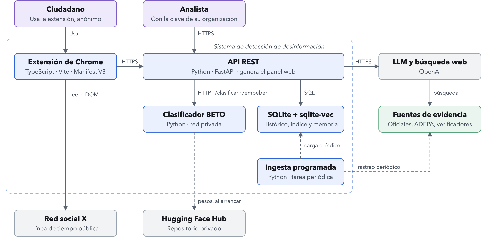
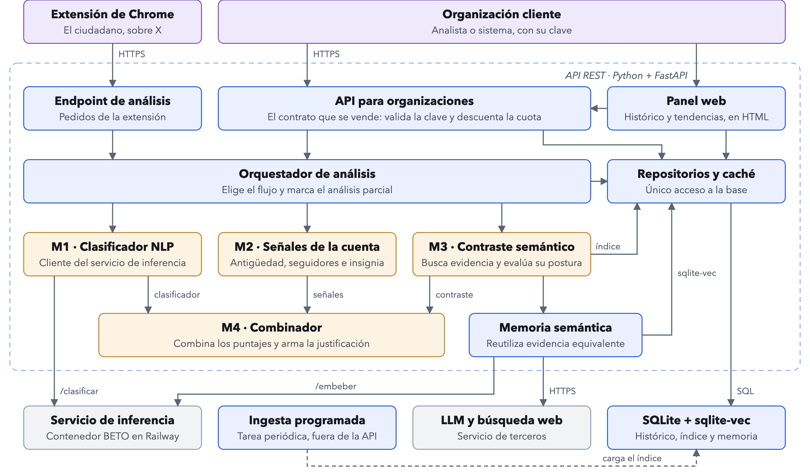
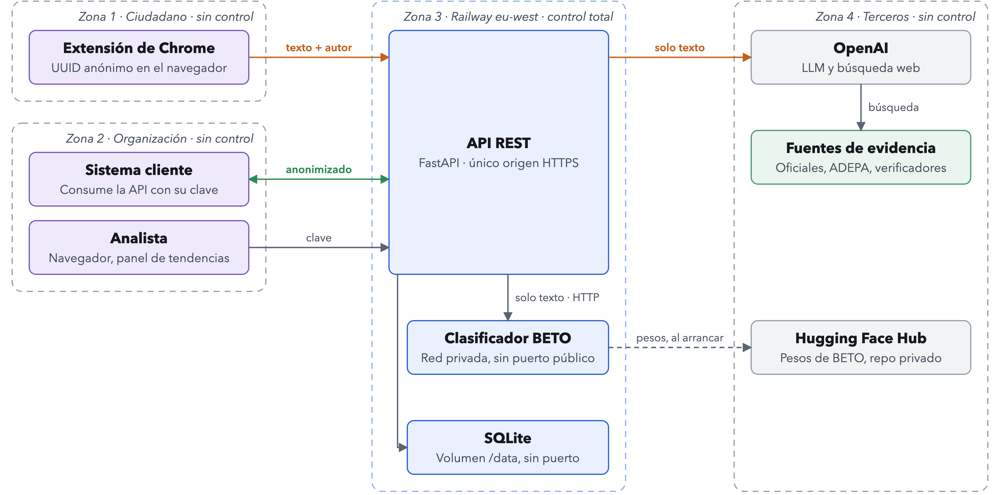
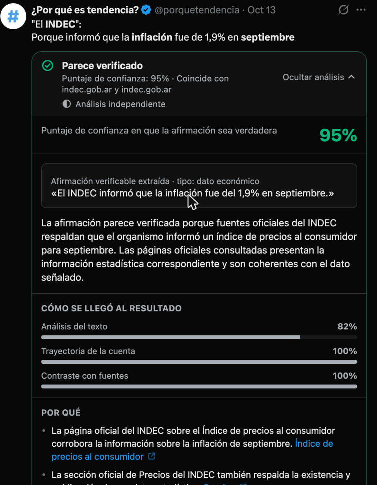
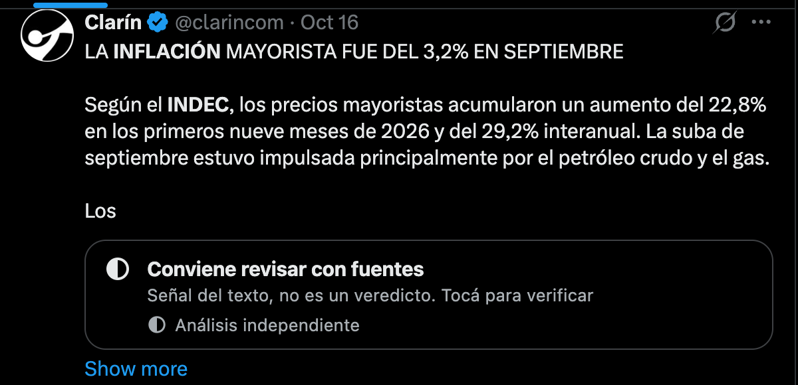

Encuesta propia, 116 respuestas, escala de 1 a 5:
usarla 4,09 · creerle al puntaje 3,58.
Quieren la herramienta, no el número solo.
Cada veredicto enlaza el documento de origen.
Llega adonde no llegan las Notas de la Comunidad.
La más parecida: audio de debates, web abierta.
BETO, noticias académicas
BETO, 94 tuits argentinos
Sistema completo, precisión 1,00 en falso
La cifra son las chances de que la afirmación sea verdadera, de 0 a 100. Más alto es mejor.
Un caso falso y uno verdadero ya analizados, y uno nuevo en vivo.
5 análisis nuevos por mes
Lo viral sale de la caché
API desde USD 200 por mes
Panel de tendencias, USD 300
Otros usos: monitoreo electoral, alertas para medios, educación mediática.
El objetivo no es que el usuario le crea al veredicto, sino que pueda prescindir de él.
El sistema entrega el camino hacia la evidencia, no solamente la conclusión.





| Modelo | SFNC validación | SFNC prueba | Tuits argentinos |
|---|---|---|---|
| Línea base TF-IDF + LR | 0,806 | 0,734 | 0,451 |
| XLM-T con etapa en inglés | 0,823 | 0,704 | — |
| RoBERTuito | 0,761 | 0,558 | — |
| BETO | 0,876 | 0,760 | 0,422 |
| BETO adaptado con Chequeado | — | — | 0,518 |
| LLM sin ajuste | — | 0,873 | — |
| Sistema completo (pesos-v4) | — | — | 0,712 (IC 0,61–0,80) |
| Real \ veredicto | Verdadero | Falso | Sin contraste |
|---|---|---|---|
| Verdadera (46) | 45 | 0 | 1 |
| Falsa (48) | 25 | 23 | 0 |
F1 macro. Chequeado figuró entre las fuentes en 78 de los 94 análisis: el valor sobreestima el desempeño ante desinformación nueva. El 77 % del corpus es anterior a 2022.
| Qué | Resultado | Meta |
|---|---|---|
| Pruebas automatizadas del servicio | 137, cobertura del 93 % de las sentencias | — |
| Pruebas automatizadas de la extensión | 27 | — |
| Pruebas funcionales por caso de uso | 7 de 7 aprobadas; cubren 15 de 17 RF | — |
| Usabilidad (SUS, 3 participantes) | 74,2 | 68 · se cumple, como indicio |
| Análisis profundo, percentil 95 | 16,0 s (mediana 8,5 s) | 8 s · no se cumple |
| Memoria semántica, percentil 95 | 40 ms | 8 s · se cumple en esos aciertos |
| Señal automática por lotes, mediana | 0,85 s desde Buenos Aires | — |
| F1 macro del sistema (RNF-05) | 0,712 | 0,75 · no se cumple |
| Indicador | Optimista | Neutral | Pesimista |
|---|---|---|---|
| VAN (USD, tasa 25 %) | 833.353 | 63.935 | −94.162 |
| TIR | 5.551 % | 72,6 % | no definida |
| Payback simple / descontado (años) | 0,02 / 0,02 | 2,93 / 3,46 | no se recupera |
| Equilibrio / clientes en el año 5 | 17 / 97 | 23 / 41,5 | 21 / 15,5 |
| Necesidad máxima de financiamiento (USD) | 1.716 | 52.694 | 167.500 |
| Sensibilidad del neutral | VAN −20 % | VAN +20 % | Equilibrio |
|---|---|---|---|
| Costo por análisis (USD 0,0246) | 82.682 | 45.188 | +68 % |
| Precio de la API superior (USD 2.500) | 16.764 | 111.106 | −27 % |
| Captación de clientes | 56.258 | 100.473 | −37,5 % |
Mercado por año: TAM USD 5.024.800 · SAM USD 4.960.000 · SOM USD 369.400 (ingresos del año 5 del neutral).
| Producto | Segmento | Precio |
|---|---|---|
| Extensión | Ciudadano | Gratis, 5 análisis nuevos por mes |
| API, nivel inicial | Desarrollo y evaluación | 1.000 consultas por mes sin cargo |
| API, nivel intermedio | Medios pequeños y verificadores | USD 200 por mes, 5.000 consultas |
| API, nivel superior | Medios grandes y marcas | USD 1.500 a 5.000 por mes, 40.000 consultas |
| Excedente de la API | — | USD 0,04 por consulta |
| Panel de tendencias | Verificadores y observatorios | USD 300 por mes |
| Monitoreo electoral | Organismos y ONG | USD 10.000 a 50.000 por contrato |
| Dataset histórico | Universidades | USD 100 por mes |
Horas del tesista en el año 0: no se imputan al flujo. A valor de mercado, con cargas sociales, equivalen a USD 24.434. La inversión del año 0 es de USD 1.716. Precios contrastados con herramientas comparables, no con clientes.